Movies
I consider the media world to be one of the most captivating ones. I think good movies can provoke thought and new ideas, while allowing you to escape your world an enter a new one.
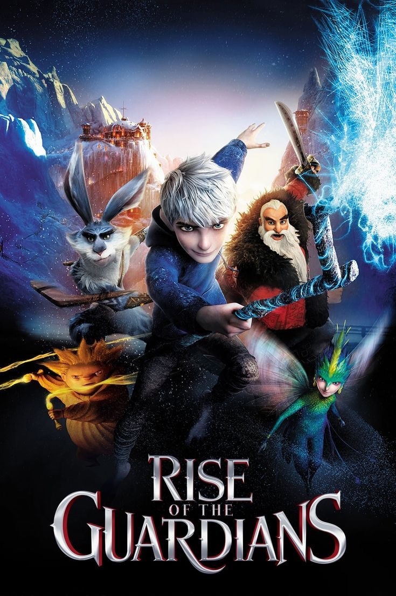 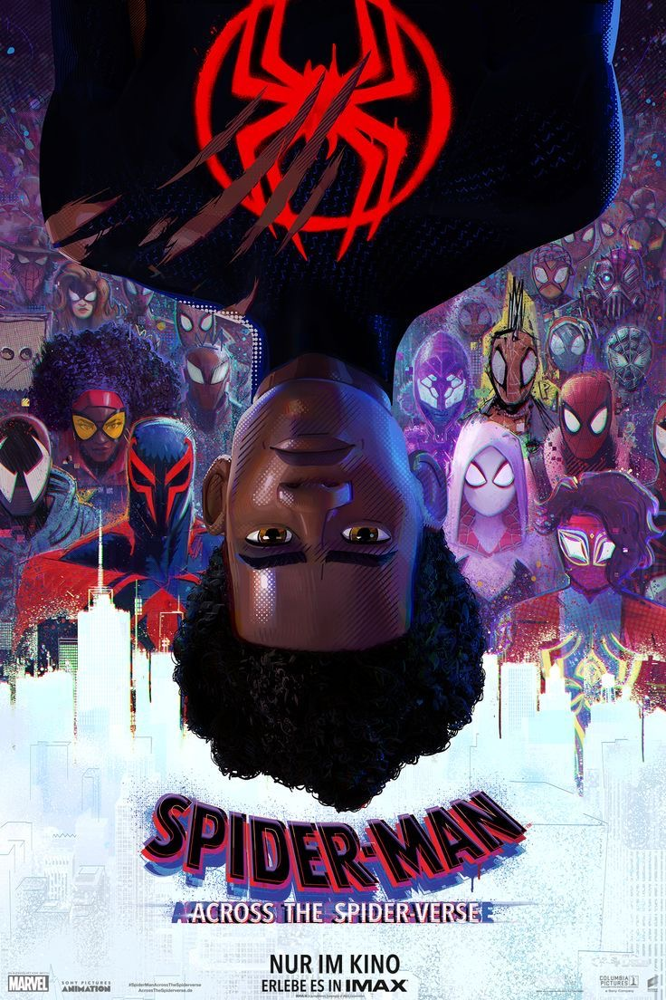 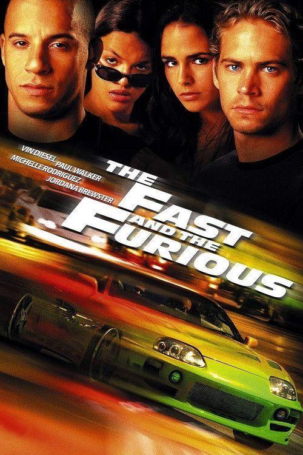left to right: rise of the guardians, spider-man: across the spider-verse, the fast & the furious
Shows
Similarly to movies, shows allow you to escape reality, but perhaps even more deeply than a movie would. Through shows, you're able to build bonds with characters as you follow their journey of development through many years. The idea of being able to grow up with certain shows (shoutout Stranger Things) is one of the most touching things to me.
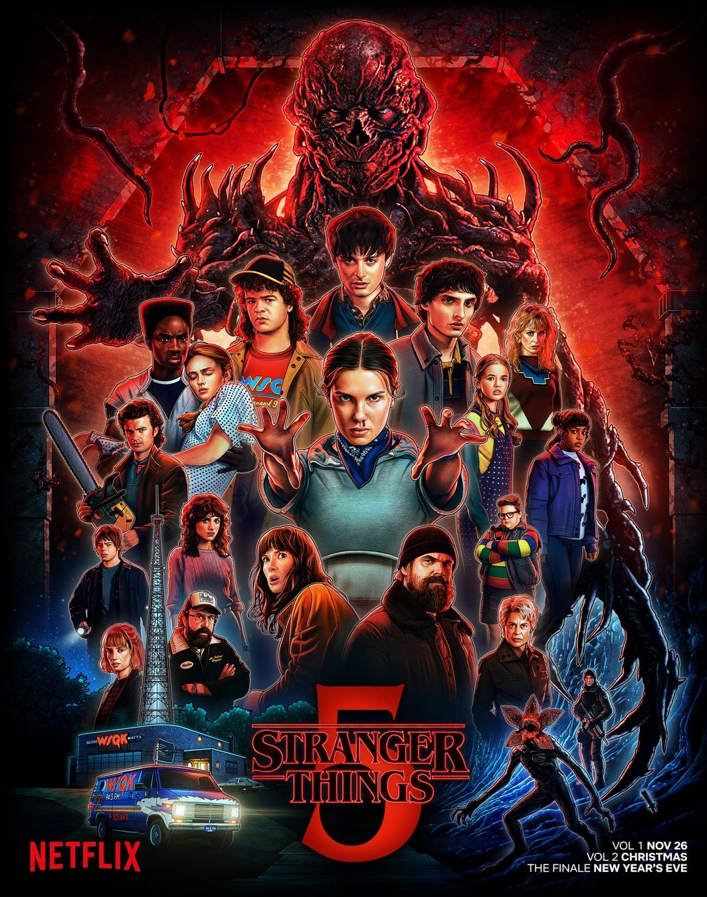 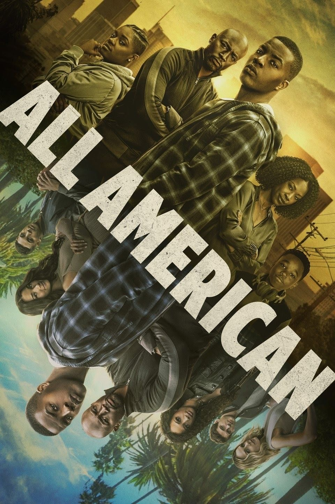 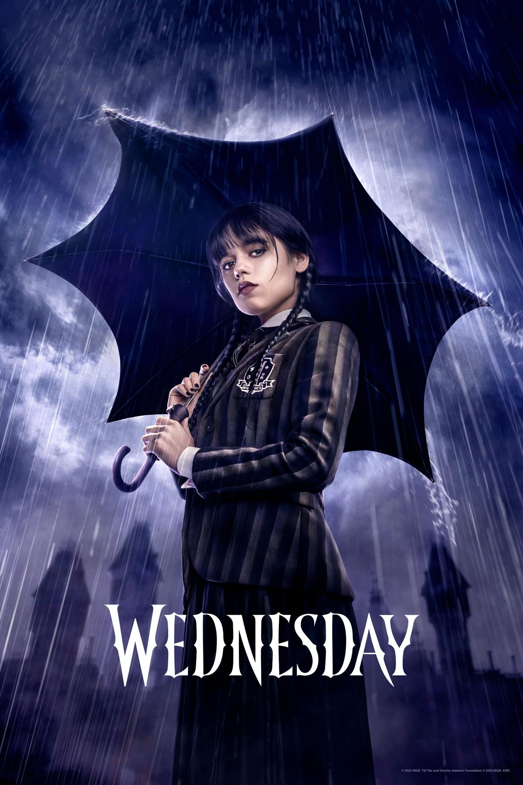left to right: stranger things, all american, wednesday
Books
They allow us to enter all kinds of worlds through the power of our imagination. Lately, I've rediscovered my long lost love of literature, and in the past 2 months, have bought and collected over 25 books to add to my collection.


left to right: ghost hour, workhorse, bunny, the employee
Directors
The people who bring all our imaginations to life through their gifts of storytelling and expression. I deeply adore and admire all who are driven by their passion and craft.
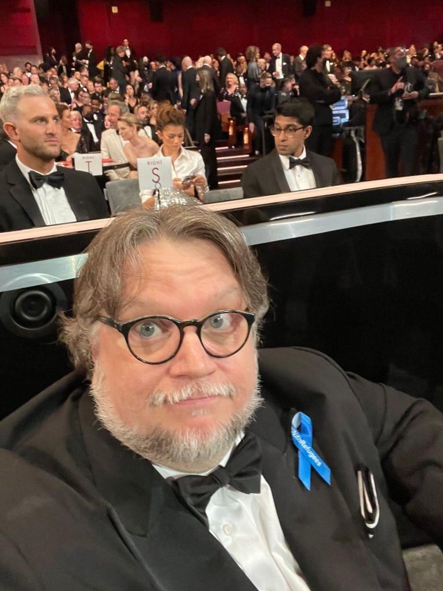 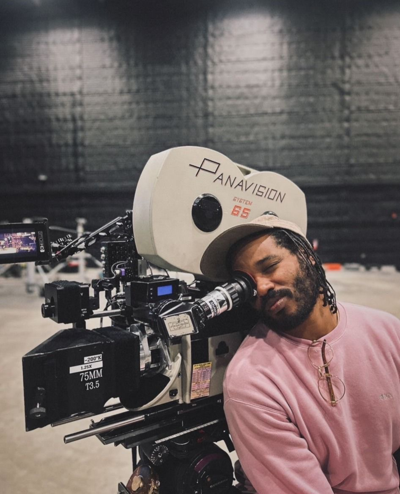 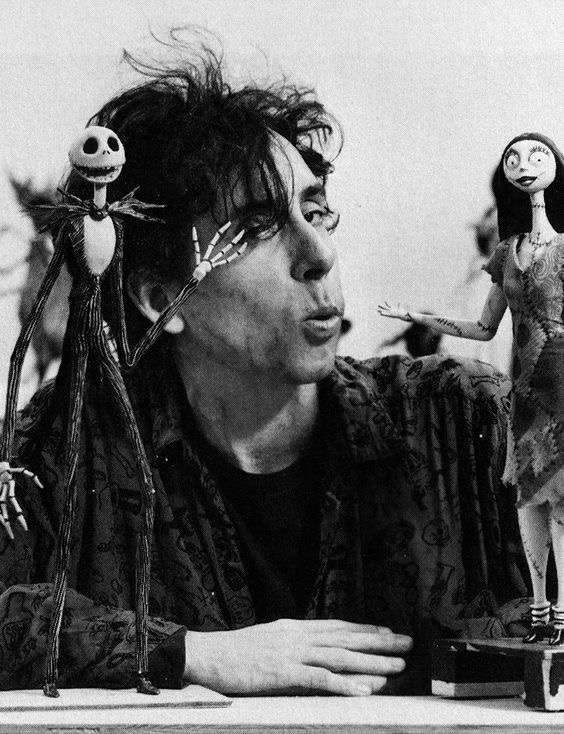left to right: guillermo del toro, ryan coogler, tim burton
Musicians
I love music so deeply. I believe music is a completely different genre of creatvity and can both heal and stimulate the brain. Music is my version of free therapy, and according to my Apple Music Replay, which displayed over 40,000 minutes listened and 500+ artists, I love WAY more music than I could possibly fit here.
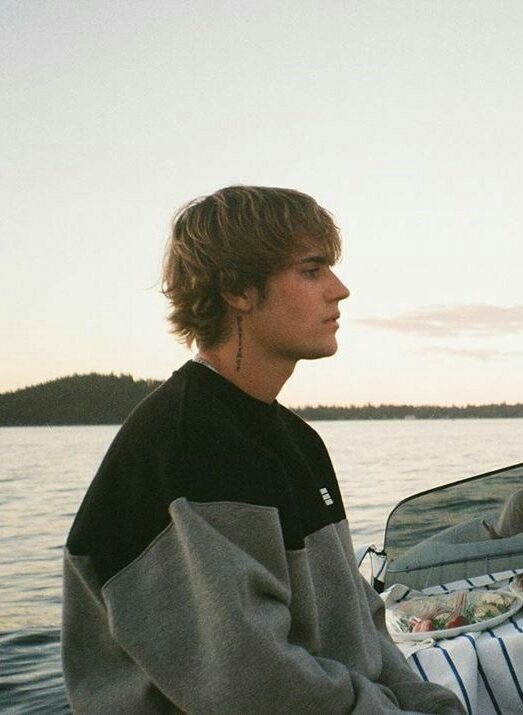 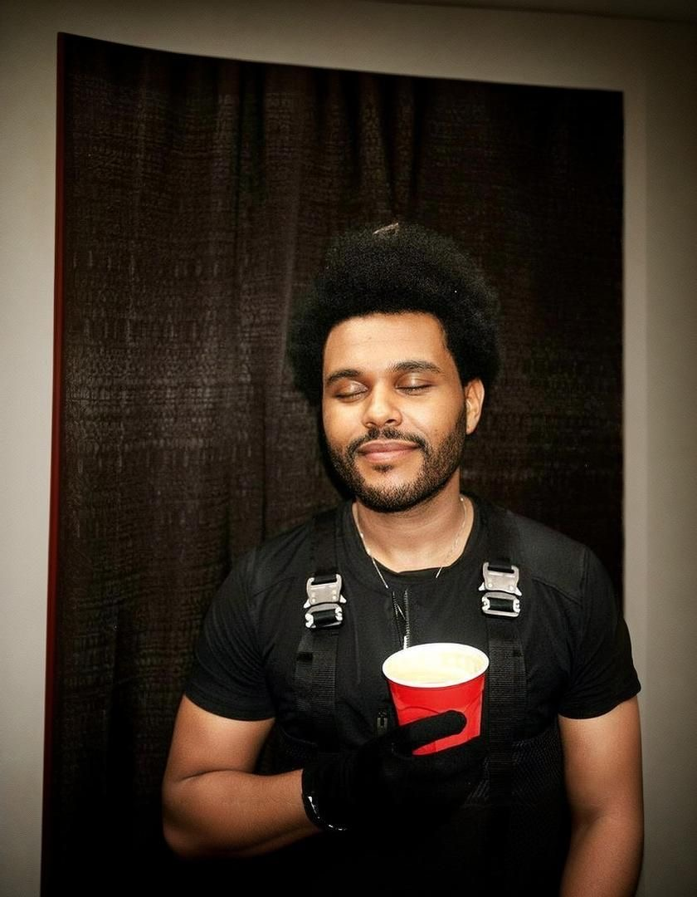left to right: justin bieber, travis scott, the weeknd
Fashion Icons
My long standing love of fashion persists constantly. From Vogue magazine to the Met Gala to celebrity paparazzi candids, all of it makes me fall in love with fashion over and over again. This short compilation of some of my favorite icons doesn't even begin to grasp how lengthy my list truly is.
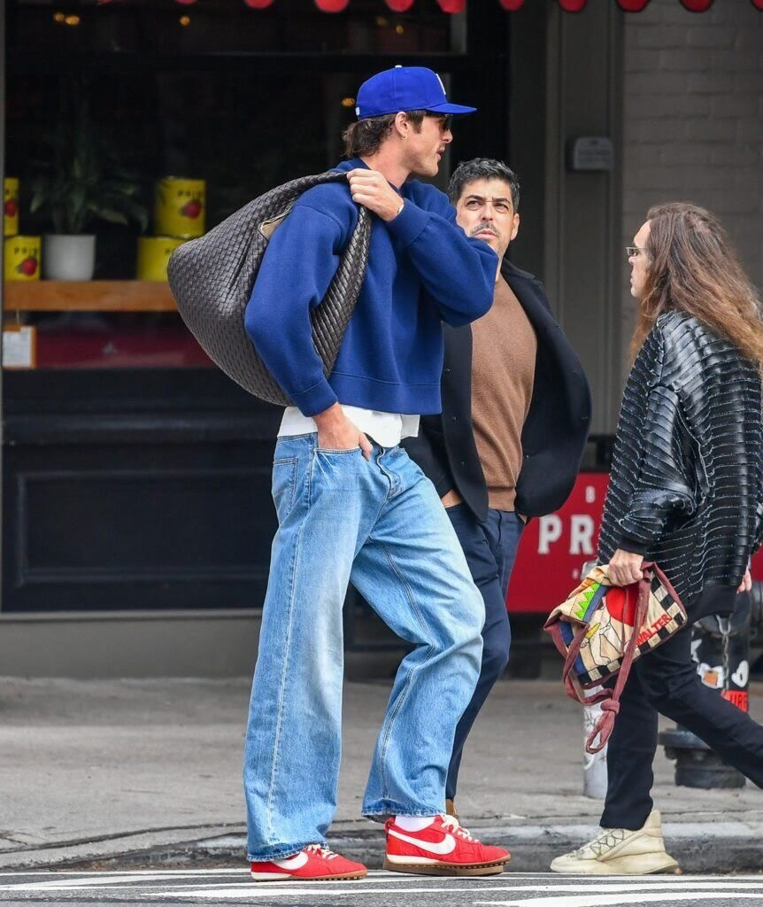 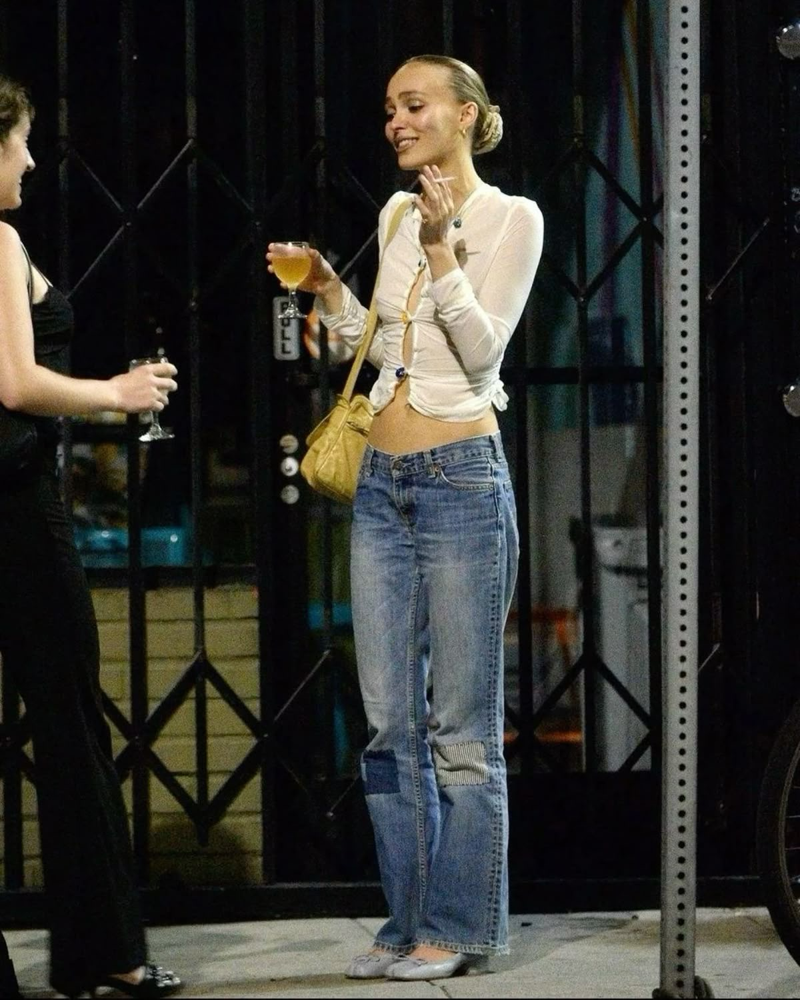 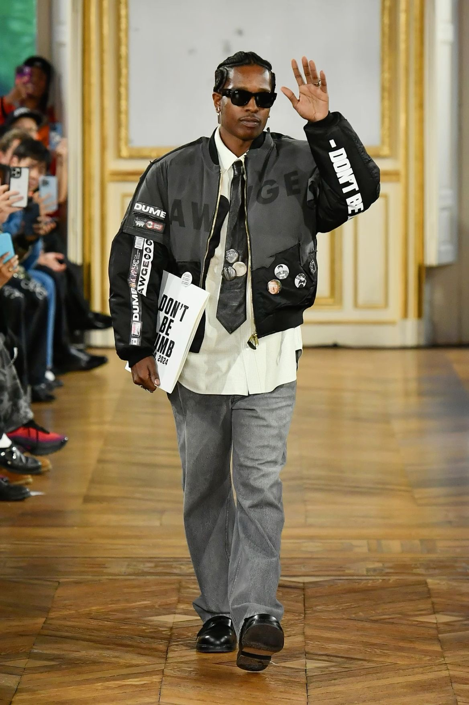left to right: jacob elordi, lily-rose depp, a$ap rocky
photo credits to images in row 1, 2, 4, 5 & 6: pinterest
photo credits to images in row 3: me